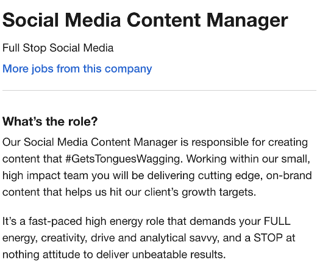

My interests in I.T includes learning the basic fundamental skills to be able to design and build websites especially for my own business. My interest in I.T only began this year when I realised I wanted to launch my own online ecommerce business and realised that I needed some extra skills to be able to customise my website to how I wanted it to look without the help from someone else. This was when I realised, I wanted to undertake Introduction to I.T as an elective as part of my course to gain those skills.
I chose to come to RMIT as they offer a variety of courses to choose from and because their facilities are such great conditions to be learning in.
From studying Introduction to I.T I hope to develop the skills necessary to help build my ecommerce website in a way that it is extremely user friendly and aesthetically pleasing to browse on.

This position allows you to be creative with your ideas and bring them to life by creating content for your audience to come across and engage in. You will be able to create content across various social media platforms such as Instagram, Facebook, Snapchat, Pinterest, Linkedin etc that will help build personality and profile for the business. This is a position that appeals to me as I enjoy everything about social media and the contents that are constantly being produced online by different businesses.
To be qualified for this position you must have at least 2-4 years’ worth of similar experience in a social media content creation role and the capability to manage multiple accounts at once.
Although I have less than 2 years’ experience of social media management and content creation, I do however have experience in social media account management and making sure that there is content being produced daily for businesses. I have actively been engaged with followers on social media platforms to ensure that we are creating a connection with the followers/customers to bring value to a brand and I enjoy doing so. My skills would be that I have attention to detail and that I am eager to learn new skills along the way that can help me grow. I can actively engage with other individuals and work well in a group. I am also able to work with photoshop, premiere pro and illustrator to produce content.
To obtain the necessary skills, qualifications and experience for this position, I will need to continue learning more new skills to build on my knowledge that I have now and take on as many opportunities as I can relating to this position to gain more experience to prepare me for this position.
As a result of the test, I found out I have a ‘defender’ type of personality which means that even though I may procrastinate sometimes I can always be relied on to get the job done on time. I also consistently go above and beyond to exceed expectations and delight others either at work or at home. For me these results tell me that I am not as extraverted as I thought. My weaknesses include being humble, shy, taking things too personally, overloading myself to meet everyone’s expectations and is reluctant to change. From this discovery I am able to realise my weaknesses that I can try to work towards from now.
These results may influence my behaviour in a team as I need to be more open to others ideas, thoughts, and processes. I also need to engage more in discussions with the team and voice my opinions and thoughts on a project.
When forming a team, I will be taking my strengths and weaknesses in account by encouraging potential team members to voice their strengths and weaknesses so that we can find out what everyone can do and what they struggle with so that we can work something out and delegate tasks accordingly. I will strive to be more engaging in discussions and not shy away.
According to the results shown above, I have both a pragmatist and reflector style of learning. Pragmatists learning style for me means that I am most efficient in the learning method of practicals, case studies, problem setting and discussions. Personally, I don’t exactly agree with the results as I don’t find myself to be an active individual in group discussions.
As for the reflector style of learning I am most suited to paired discussions, self-analysis questionnaires, time out, and feedback from others. This learning style I would agree with as I tend to engage in more with paired discussions and it is easier for me to voice my opinions in. I’m definitely someone who seeks for feedback from others whenever I can so that I am aware of what I did wrong or what I can do better for next time.
As a team member I will need to be more active in group discussions not just paired discussions so that there are more input and help put into the work that we will need to do. After finishing my part I will be seeking advice and feedback from other group members to see what needs to be improved or fixed so that everyone is happy with the end result.
From these results I will want to initiate discussions to understand each of the team member and what is to be delivered as the end result. It will mean I will be communicating more and give as much input as I can about an idea so that my team will be confident in working with me to complete a project.
A front-line leadership style means that I know how to be genuine and present during interactions with others. I have great emotional intelligence to feel empathy towards others and just how to express it. I know how to connect with people and be able to engage them in a shared vision and help empower them to achieve their best.
From these results it encourages me to continue being empathetic towards others in my team and connect with them on a deeper level to achieve the same goal and vision as I only want the best outcome for us as a team.
When forming a team, I will be considerate towards individuals who are not so sure about the project as I will try my best to help them understand so that together we can work through the problem.